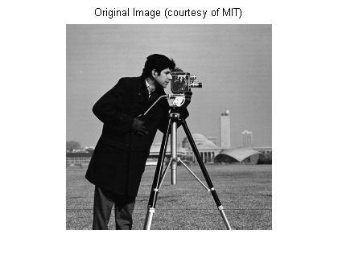
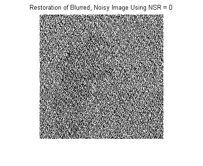
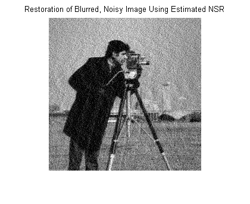
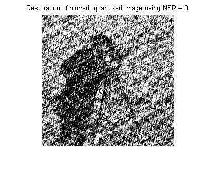

Wiener フィルターを使ったイメージのブレ除去
Wiener のデコンボリューションは、点像強度関数と既知のノイズレベルが既知であるか、推定可能な場合に役立ちます。
目次
イメージの読み込み
I = im2double(imread('cameraman.tif')); imshow(I); title('Original Image (courtesy of MIT)');
動きによるブレのシミュレーション
カメラの動きから取得するブレを含むイメージをシミュレートします。31 ピクセル (LEN=31) を超える線形移動に対応する点像分布関数 PSF を、11 度の角度 (THETA=11) で作成します。ブレをシミュレートするには、imfilter を使用してイメージのあるフィルターを畳み込みます。
LEN = 21; THETA = 11; PSF = fspecial('motion', LEN, THETA); blurred = imfilter(I, PSF, 'conv', 'circular'); imshow(blurred); title('Blurred Image');

ブレを含むイメージの復元
deconvwnr の最も簡単な構文は、deconvwnr(A, PSF, NSR) です。ここで、A はブレを含むイメージ、PSF は点像分布関数、そして NSR はノイズと信号の強度比です。手順 2 で形成されたブレを含むイメージにはノイズがないため、NSR に 0 を使用します。
wnr1 = deconvwnr(blurred, PSF, 0);
imshow(wnr1);
title('Restored Image');
ブレおよびノイズのシミュレーション
ここで、ノイズを追加してみましょう。
noise_mean = 0; noise_var = 0.0001; blurred_noisy = imnoise(blurred, 'gaussian', ... noise_mean, noise_var); imshow(blurred_noisy) title('Simulate Blur and Noise')
ブレとノイズを含むイメージの復元: 最初の試行
最初の復元試行では、deconvwnr にノイズがない (NSR = 0) ことを伝えます。NSR = 0 の場合、Wiener 復元フィルターは、理想的な逆フィルターと同じことになります。理想的な逆フィルターは、次のイメージで示すように、入力イメージのノイズに非常に敏感になります。
wnr2 = deconvwnr(blurred_noisy, PSF, 0);
imshow(wnr2)
title('Restoration of Blurred, Noisy Image Using NSR = 0')
 ノイズは逆フィルターによって、人間の形状の最低限の気配のみという程度まで増幅されました。
ブレとノイズを含むイメージの復元: 第 2 の試行
第 2 の試行では、ノイズと信号の強度比を推定します。
signal_var = var(I(:));
wnr3 = deconvwnr(blurred_noisy, PSF, noise_var / signal_var);
imshow(wnr3)
title('Restoration of Blurred, Noisy Image Using Estimated NSR');
 ブレおよび 8 ビット の量子化ノイズのシミュレーション
視覚的には感知できない量のノイズでも結果に影響を与えることがあります。double に変換する代わりに、uint8 表現の入力イメージを維持します。
I = imread('cameraman.tif');
class(I)
ans = uint8
uint8 イメージを imfilter に渡すと、別の uint8 イメージを戻すために、出力を量子化します。
blurred_quantized = imfilter(I, PSF, 'conv', 'circular'); class(blurred_quantized)
ans = uint8
ブレを含み量子化されたイメージの復元: 最初の試行
再度、 deconvwnr にはノイズがないことを最初に伝えます。
wnr4 = deconvwnr(blurred_quantized, PSF, 0);
imshow(wnr4)
title('Restoration of blurred, quantized image using NSR = 0');
 ブレを含み量子化されたイメージの復元: 第 2 の試行
次に、NSR 推定を deconvwnr に提供します。
uniform_quantization_var = (1/256)^2 / 12; signal_var = var(im2double(I(:))); wnr5 = deconvwnr(blurred_quantized, PSF, ... uniform_quantization_var / signal_var); imshow(wnr5) title('Restoration of Blurred, Quantized Image Using Computed NSR');